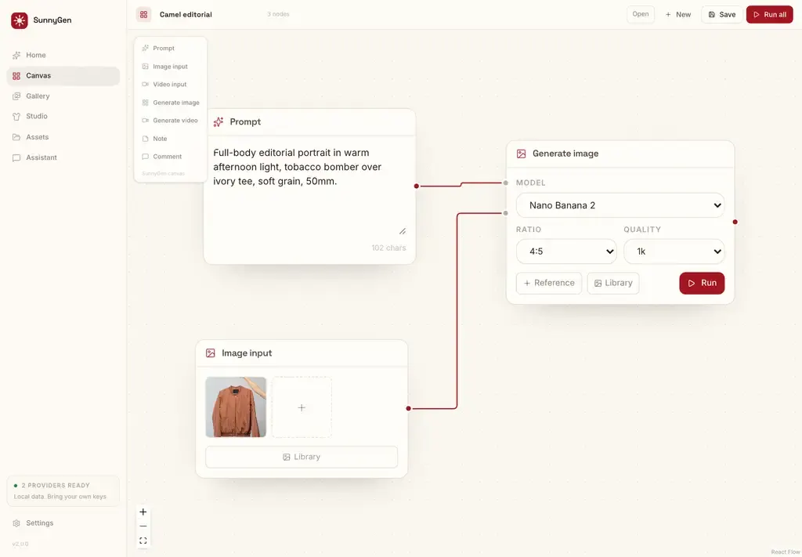

Build reusable AI image pipelines on a node canvas
Connect prompt, media, and generate nodes on an infinite canvas. Save the graph once, then re-run it with new references instead of rewriting prompts.

Five node types
| Node | What it does |
|---|---|
| Prompt | Holds the text that drives a render. |
| Media | Brings in an image or video as a reference. |
| Generate | Renders with its own model and settings. |
| Note | Keeps instructions next to the graph. |
| Comment | Annotates a part of the pipeline. |
How a pipeline runs
- Connect. Wire a Prompt node, and any reference media, into a Generate node.
- Choose models per node. Each Generate node picks its own model, for example Nano Banana 2, Seedream, or GPT Image 2.
- Run all. The graph executes in dependency order, so upstream results feed downstream nodes.
- Collect results. Every finished render lands in the gallery automatically.
Why a canvas instead of a chat box
One-off prompts are hard to repeat. A saved canvas keeps the prompt, references, and model choices together, autosaves as you work, and runs again on new inputs. It suits product shots, character series, and any look you want to reproduce.
Results go straight to your gallery
Canvas renders join one-off renders from the home prompt bar in a canvas wall or grid, with folders, failed-job retry, a lightbox, and downloads. Files stay in your local media folder.